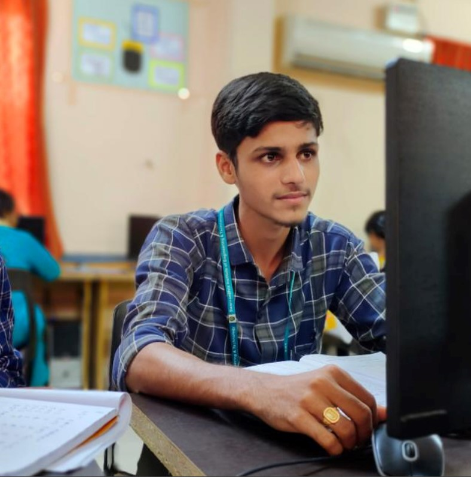

JASWANTH POTINNEEDI
I BELIEVE IN
EAT(); SLEEP(); CODE(); REPEAT();

About
I am a passionate Engineer with a degree in Computer Science Engineering. My very first experience with code was at the time when I started my own blog. My struggle to customize the blog pages introduced me to HTML & CSS. Sooner, the excitment of having the power to structure pages on my own sounded amazing and that’s when I decided to purse Web development.Recently, I learnt Full Stack Development. I have knowledge of HTML, CSS and JavaScript, Java, C++, python and Data Structures. Rational thought process and goal-oriented planning are my strengths.I am currently on the look out for a challenging role to build products that make a difference.
MY PORTFOLIO
Some of my best projects so far.
PERSONAL BLOG - A blog where I pen my own thoughts on programming
TIC TAC TOE - Complete Tic Tac Toe game along with GUI using Java
TIME TABLE GENERATOR - A web application for automatic time table generation
TECHNICAL SKILLS
- HTML
- CSS
- JAVASCRIPT
CONTACT ME
📱-70938 59588
📧-jaswanthnaidu2109@gmail.com